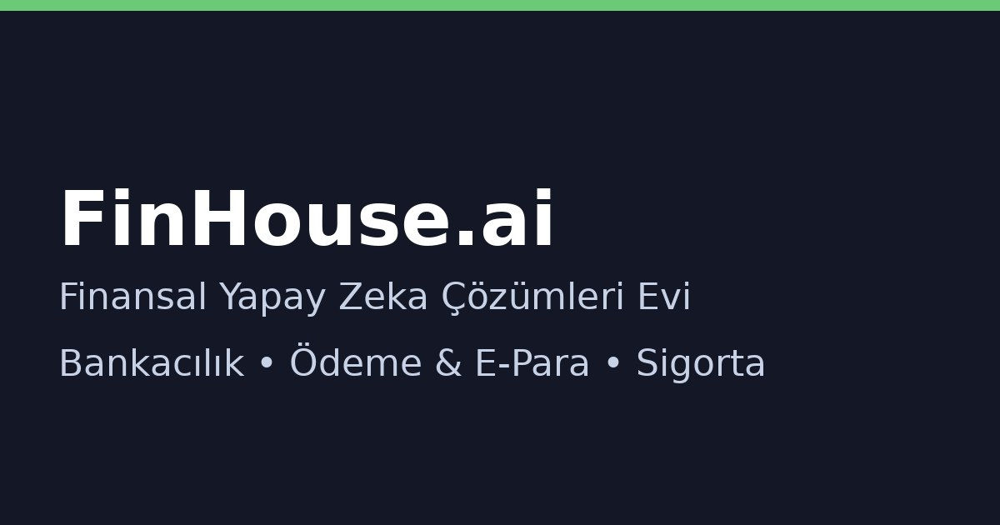

Workflow & Analytics
Süreçleri görünür kılın: darboğazlar, SLA riskleri, STP oranı ve maliyet sürücüleri. AI ile aksiyon önerileri ve izleme dashboard’ları.

Ne sağlarız?
Process discovery
Süreç adımlarını veriden çıkarır, varyasyonları gösterir.
Darboğaz analizi
Bekleme sürelerini ve yoğunlaşan noktaları ortaya çıkarır.
SLA & risk
SLA kaçırma erken uyarı, backlog ve kök neden sınıflaması.
KPI örnekleri
| KPI | Açıklama |
|---|---|
| SLA uyumu | Zamanında tamamlama oranı |
| Backlog | Bekleyen iş/işlem sayısı |
| STP oranı | Straight-through processing (manuel dokunuşsuz) |
| Cycle time | İşlem uçtan uca süre |